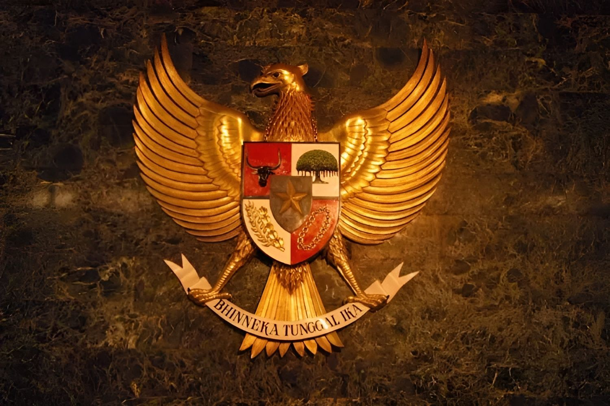

Energi bersih dan terjangkau dapat memperkuat persatuan bangsa, baik secara domestik maupun internasional, karena energi menjadi elemen penting dalam pembangunan nasional yang merata. Di tingkat global, kerja sama dalam pengembangan energi terbarukan juga mempererat hubungan antara negara-negara, mengurangi ketegangan, dan membangun kemitraan yang solid. Indonesia dapat menjadi pemimpin dalam kerja sama regional atau internasional untuk transisi energi bersih, menciptakan solidaritas antar negara dan mengurangi ketergantungan pada energi fosil yang mengarah pada ketidakstabilan.
Dalam konteks kerja sama internasional untuk energi bersih, kebijakan yang diambil harus melalui perwakilan dan musyawarah yang melibatkan berbagai pihak baik pemerintah, masyarakat, dunia usaha, dan organisasi internasional. Indonesia sebagai negara demokratis harus menjalankan musyawarah dan mufakat untuk mengambil kebijakan yang tepat dalam mengelola energi bersih dan terjangkau. Prinsip musyawarah ini juga mencerminkan pentingnya transparansi dan inklusivitas dalam kebijakan pembangunan energi yang berkelanjutan.